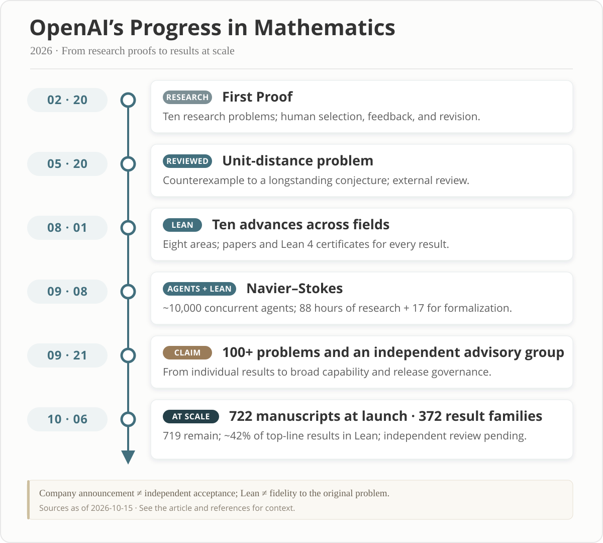

· Notes · Revised
Where Do We Go from Here? The Destruction and Rebirth of Mathematics
This English version was translated from the Chinese original by a large language model.
Preface
Since May 2026, my assessment of AI's mathematical abilities has been overturned several times. Through my work in AI research, I had already been using large language models extensively to write code, search for information, and discuss research ideas. In May, a friend told me that ChatGPT had become much better at mathematics, so I began giving it problems from my research. At first, I was surprised that it could solve problems that ordinary doctoral students had failed to solve. Two months later, it had supplied solutions to several open problems in my own area that had remained unresolved for decades, and I began to wonder whether it had already surpassed every human expert in the field. Later still, a succession of results announced by OpenAI brought this shock to the whole mathematical community. Mathematics had reached its “AlphaGo moment”—perhaps that moment had already quietly passed. Meanwhile, discussions of AI and mathematics intensified, conflicting judgments proliferated, and more people began using AI to produce mathematical papers rapidly. Results, claims, controversies, and insufficiently checked outputs became mixed together, making it difficult to see what they really meant. After trying to keep pace with these changes and using AI to work through some mathematical problems, I too wanted to pause and consider, from my own experience, what AI means for mathematics, mathematicians, and those who will follow us.
For a mathematical researcher of ordinary ability like me, it was this May that I first truly felt AI could undertake serious research. Before then, hallucinations and reasoning errors had made it hard for me to trust the models. By May, however, I could clearly feel in practice that they could make sustained progress on some research problems. The first problems I gave them were ones on which members of my research group, including me and several senior colleagues from my doctoral years, had spent months without success. Their background was reasonably complete and their difficulties well defined. GPT eventually supplied solutions to all of them. Some required only a few conversations with the Plus version and an hour or two; others took dozens of attempts with Pro, spread over three days to several weeks.
The experience was not entirely pleasant. As I talked with the model, I learned, supplied materials, and adjusted my instructions. But once it ventured into technical territory unfamiliar even to me, I was often left with little to do except ask it to keep researching. On the surface, I still directed the conversation; in practice, the ability to determine the course of the proof was increasingly out of my hands. This changed my understanding of my own place in mathematical research.
I had thought I was using AI to help me do mathematics. Increasingly, I began to suspect that AI was doing the mathematics, while I merely found problems for it, supplied background, organized materials, and checked its output.
My feelings about AI have therefore remained conflicted. Problems I could never understand suddenly seemed solvable, and of course that thrilled me. But if the crucial constructions, strategies, and proofs all came from the model, what did “this is my mathematical work” still mean? As its ability to prove things moved far beyond what I could achieve independently, fear gradually overtook excitement. Research seemed to be getting easier, while my agency as a researcher diminished.
By July, with AI's help, I had obtained solutions to several of what I considered the most important and difficult open problems in my field. I could no longer even think of open problems in our area that were more consequential or harder. I felt that my own part in these solutions was small. They did require far more conversational turns and time than before, and I kept offering hints and ideas from different angles. Yet the decisive breakthroughs often came suddenly, as though GPT had experienced an instant of revelation and produced the complete answer all at once.
Of course, getting an answer did not mean the work was finished. At the time, the proofs it generated were still hard to read. I spent a great deal of time organizing their structure, simplifying arguments, supplying details, and repeatedly asking about ideas and motivations before turning them into mathematical work that I believed experts in the field could understand and check. This was real labor, but it was very different from what I had once imagined as “independently discovering a proof.” And I believe AI will soon surpass me at these tasks too.
From August onward, OpenAI's successive announcements reinforced my judgment: at least in solving the kinds of mathematical problems I knew, AI already held a clear advantage, and I found it increasingly hard to believe that any individual human expert could consistently outperform it. Its mathematical writing was improving too. With suitable prompts and writing requirements, it could already do most of the work on a manuscript. What remained was often a matter of terminology, transitions, organization, and expression. I found this curious: the model could cross reasoning barriers I could not, yet still sound awkward in writing details that were easy to fix. I find it hard to believe these details will remain an obstacle for long. If AI companies continue investing in them, writing, problem selection, and even the organization of mathematical theories may soon undergo similar changes.
Recently, while using the dots feature, I felt another, deeper change: it could already work continuously on a mathematical problem for days, complete the research, and return a proof. I no longer even needed to sit in front of a chat window, supplying more hints and pushing the reasoning forward through round after round of conversation, to obtain a result. In the past, those repeated discussions still gave me a sense of participating in the formation of a proof. Now I increasingly feel that I simply state a wish and wait for it to return with the result. It has become, completely and utterly, a machine that grants wishes. This leaves me in no doubt that, as AI continues to develop, it will be able to carry out the entire research process for a mathematical paper independently: searching the literature, analyzing the problem, exploring approaches, constructing proofs, carrying out formal verification, organizing results, and writing the paper. What I face being replaced is therefore no longer just my central ability to prove things, but the entire range of work I do as a mathematical researcher.
At this point, mathematics has undoubtedly already passed its “AlphaGo moment.” So far, I have not encountered anyone who has told me that AI could not independently prove a result they had proved. The value of traditional mathematical research, the role of mathematicians, and society's reasons for sustaining the profession will all have to be reconsidered. Mathematical research, too, is approaching a destruction and rebirth of its own.
I want to discuss three connected questions. At the broader level, how will the old ways of doing research break down, and how might mathematics develop? For me personally, what should I retain, change, and give up? For those who come after us, is basic mathematics still a career worth pursuing, and how should they learn and participate in it?
Part I. The Bigger Picture: Why This Time Is Different
1. This Is Not Another Crisis Within Mathematics
In Mathematics in the age of AI, Terence Tao contrasts the present changes with the foundational crisis of the early twentieth century. The paper grew out of his public lecture at the ICM on 24 July 2026, and became a preprint in August.
Mathematics has no shortage of profound upheavals. Discussions of irrational numbers, non-Euclidean geometry, set-theoretic paradoxes, and the foundations of mathematics repeatedly changed how people understood number, space, infinity, and rigor. But these changes took place mainly within mathematics. When old concepts encountered difficulties, mathematicians created new ones; when standards of proof were unclear, mathematicians rebuilt the foundations. After each crisis, the people doing mathematics were still human, and the new theories still needed people to learn, teach, and develop them. AI may instead change who produces mathematics: if machines can independently undertake more and more discovery and proof, does mathematics still need human mathematicians as its principal producers? Tao identifies some of the values and practices now being tested:
“what we consider a contribution to be, what we reward, what we regard as understood”
In other words: what counts as a contribution, what deserves recognition, and what it means to understand. The earlier debates forced mathematicians to clarify the foundations of truth. AI now forces us to clarify the purposes of research, and the relationship between discovery, understanding, and human credit.
Just two months later, these forward-looking reflections had become urgent questions that people working in mathematics could no longer avoid.
To discuss AI's impact on mathematical research, we must first distinguish mathematical knowledge, the mathematician's profession, and the research institutions built over many years. Their futures may diverge.
Crucially, the initiative in this transformation does not lie with the so-called mathematical community. Whether models grow stronger, whether they are released, how much they cost, how much compute is available, and whether they can run autonomously for long periods are largely determined by technology companies, capital, policy, and wider social competition. Mathematicians can set publication standards and decide what journals accept. They cannot decide that models must stop improving, nor require other disciplines or ordinary users to obtain mathematical capabilities through the traditional mathematical community. Under these conditions, persuading governments and institutions to fund pure mathematics in the old way may also become harder.
The extent of the disruption also depends on changes outside mathematics. If similar capabilities spread to physics, chemistry, engineering, programming, education, and many other occupations, universities, research funding, employment, and intellectual authority may all be reorganized together. The fate of mathematicians is only one part of this. We can hardly assume that all other institutions will remain unchanged and then calculate, in isolation, how many mathematicians the future will need.
2. What Thresholds Has AI's Mathematical Ability Crossed?
“AI has surpassed humans” is far too broad a statement. Proving ability, conceptual understanding, taste in choosing problems, and paper writing are different things. In the speed, scale, and breadth of proof production, the most advanced AI systems have already left human mathematicians far behind. The ability to prove things was once one of the most important measures of a mathematician. It was also extraordinarily scarce. Those who possessed it were regarded as geniuses, and mathematical research acquired something of the character of a heroic epic.


February: attempts at research proofs. OpenAI's First Proof submissions report presented attempts at ten specialist research problems and described the involvement of human selection, expert feedback, and further revision. These interventions limit how directly the results can be treated as an independent evaluation of capability, but the tasks themselves were already clearly different from short-answer questions and competition problems.
May: independently finding a route to a counterexample. OpenAI announced a counterexample construction for Erdős's conjecture on unit distances in the plane. According to its account, an internal general-purpose model introduced tools from algebraic number theory, obtained a polynomial improvement, and had its work checked by external mathematicians. The comments from Noga Alon and Tim Gowers quoted on the page emphasize, respectively, the significance of the result and the model's ability to find a new direction for counterexamples.
August: results across fields, with formal certificates. Ten advances in mathematics and theoretical computer science spanned sphere packing, coding theory, group theory, arithmetic circuits, operator algebras, quantum complexity, lattice cryptography, and extremal combinatorics. OpenAI released papers and Lean certificates together, bringing the generation, writing, and formal checking of research results closer together.
September: collaboration among agents at scale. OpenAI announced a claimed proof of the Navier–Stokes Millennium Prize Problem, accompanied by a Lean formalization, stating that its construction resolved the cases with smooth forcing covered by C and D in the official formulation. The Clay Mathematics Institute's announcement of 11 September used the phrase “apparently been settled,” while explaining that evaluation and attribution follow their own procedures. These materials also describe a research process involving large numbers of concurrent agents, revealing an organizational model very different from an individual or small group working on a problem for years.
October: a flood of results. OpenAI published Sharing AI progress in mathematics and the openai/math repository. There were 722 manuscripts at launch; the revision history records that three were withdrawn on 7 October. As of the checks for this revision on 24 October, the repository listed 719 manuscripts in 372 result families, with approximately 42% of top-line results formalized in Lean. A family can include a principal result, supporting arguments, consequences, and alternative proofs, so the manuscript count cannot simply be equated with the number of independent open problems. The repository also explicitly notes that results are at different stages of verification and that some results without formalizations may still contain problems.
These materials have been described as a “nuclear explosion” and a “deluge.” Le Monde's report on Hugo Duminil-Copin says that sixteen of the problems directly concerned his research, and that one involved an entire research program developed across thirteen papers.
His words in the report were:
“They have annihilated my field of research”
This all but ended the career he had envisaged. OpenAI says its internal model attempted approximately four thousand problems in this evaluation. In the company's compute accounting, each result required, on average, the equivalent of about three hours of ChatGPT Pro thinking compute using that internal model. This figure describes inference compute in that evaluation; it cannot be translated directly into the performance of a public product or the total cost of the research.
Even with these distinctions in place, the efficiency gap is astonishing. Some of these problems had occupied exceptional mathematicians for years; a single major breakthrough could once define a research career. The heroic narrative of mathematics, centered on individual talent, inspiration, and years of accumulated knowledge, is being rewritten by a new mode of production. This is already an industrial revolution in mathematics: research conducted like a craft workshop has encountered the overwhelming efficiency of machine production. If this capability continues to improve and becomes widely available at low cost, then, in terms of producing mathematical proofs, traditional mathematicians who make slow progress as individuals will inevitably be displaced.
It will take time for this shock to work its way through the system, but mathematicians may not have much time left. If the prized ability to “prove difficult results” is no longer scarce, what meaning remains for mathematical research as a profession?
3. How Will an Abundance of Proofs Change the Profession?
Throughout this process, Terence Tao has been among the mathematicians most actively involved in the discussion. He has consistently encouraged and experimented with AI in mathematical research while criticizing certain ways of using it and releasing results. In his 10 October explanation of Math 2.0, he attributes part of the current situation to an “excessive emphasis on automated solving of open problems by AI,” and proposes using AI to support the mathematical community and the role of mathematical understanding in real applications. But this view has also provoked much controversy. Many of these problems had existed for a long time; the mathematical world simply refused to discuss them and acted as though they did not exist. AI has merely amplified them and brought them into focus. It did not create them.
Nor do I believe that the community's insistence on these goals can prevent machine mathematics from replacing the traditional research paradigm and mathematicians. Mathematicians need to rethink their roles and value, and find new ways to take part in research.
I tend to think that there will be fewer positions in basic mathematics whose principal duties are producing proofs and papers. At the same time, more people may participate in mathematics. As AI lowers barriers, engineers, doctors, programmers, students, and amateurs may all bring their own problems to the subject. Explorations once obstructed by the demands of literature, training, and technique may become accessible to more people. Fewer professional mathematicians and more widespread mathematical activity are entirely compatible.
Almost everyone doing pure mathematical research works at a university or a government-funded research institute. University positions also depend on student numbers, course demand, public finances, institutional priorities, and the structure of industry. The Chinese Ministry of Education's 2025 National Statistical Bulletin on Education Development reports 48.7257 million students across all forms of higher education and a gross enrollment ratio of 61.3%, so the immediate demand for teaching remains enormous. The National Bureau of Statistics' population figures for 2025, however, record 7.92 million births and a total population decline of 3.39 million from the previous year.
The continuing decline in births will put pressure on university admissions as the corresponding cohorts reach university age. Eighteen years from now, even if everyone attends university, total higher education enrollment is expected to be halved. If student numbers fall while fixed costs such as buildings and staffing cannot adjust in step, some universities may face higher costs per student, pressure on income, and institutional contraction. These pressures will inevitably reach positions in pure mathematics.
AI's substitution for research labor and the demographic pressures on university enrollment may gradually converge over the next decade or two. If AI also transforms other industries, society's demand for degrees, courses, and research will itself change. How many mathematical positions remain will depend on what kinds of mathematical work society needs and what it is willing to invest in them. To discuss this, we first need to recall why society supported professional mathematicians in the first place.
4. Why Should Society Still Support Professional Mathematicians?
Mathematics is much older than the modern university, but the “professional mathematician” emerged under particular historical conditions; the role has not existed forever. Across the long course of history, the disappearance of an occupation is perfectly ordinary. Research universities, academic journals, doctoral training, peer review, and national research funding gradually organized mathematics into work that could provide a continuing salary, a position, and a career.
At the beginning of the English translation of Science as a Vocation, Weber brings ideals back to the question of livelihood:
“it is extremely hazardous for a young scholar without funds to expose himself to the conditions of the academic career.”
This sentence appears in his comparison between the unpaid German Privatdozent and salaried assistant positions in the United States. He reminds young scholars that intellectual pursuits depend on concrete arrangements for jobs and income. The value of knowledge does not guarantee that those who pursue it can make a living from it.
Around the Second World War, public funding gave basic research a new institutional foundation. In Chapter 3 of Science: The Endless Frontier, published in 1945, Vannevar Bush wrote:
“But basic research is essentially noncommercial in nature. It will not receive the attention it requires if left to industry.”
His argument was that the benefits of basic research are long term and uncertain, so commercial incentives alone cannot ensure adequate investment. The U.S. National Science Foundation (NSF), established in 1950 as a federal research funding agency, opens its statutory mission with:
“To promote the progress of science; to advance the national health, prosperity, and welfare”
Scientific progress was thereby linked to public health, prosperity, and welfare. This funding rationale asks science to explain its public value, while also preserving room for research without immediate applications.
Society supports professional mathematicians for several connected reasons: universities need teaching and the training of future generations; science and engineering need reliable mathematical knowledge; basic research may produce unforeseen long-term benefits; and proof, judgment, and the transmission of knowledge require years of training. When these tasks depend mainly on professional researchers, supporting mathematical research and maintaining a professional mathematical workforce are often two aspects of the same investment.
In the past, teaching, training successors, producing reliable knowledge, and pursuing long-term exploration were often undertaken by the same professional workforce. AI is loosening the connection between these goals and the existing career structure. The continuing value of mathematics does not automatically mean that society needs the same number of professional mathematicians producing papers and theorems in the same way. Public funding for mathematics may continue, or even increase, while flowing more heavily toward compute, models, knowledge libraries, and a small number of research teams. The size of the profession and its division of labor will depend on several factors.
1. Is Human Understanding Still Something Society Will Pay For?
The Leiden Declaration on Artificial Intelligence and Mathematics is a community initiative drafted by an interdisciplinary working group formed after a September 2025 meeting at Leiden University's Lorentz Center. Its participants include mathematicians, computer scientists, historians of science, and philosophers. In its discussion of values, it states:
“Mathematics produces not only a body of results, but also understanding, clarity, and judgment”
What it seeks to preserve is the understanding, clarity, and judgment that mathematical activity brings to people. A related body is the Advisory Group on Mathematics and Artificial Intelligence (AGMAI), an independent group of mathematicians that advises AI companies on matters such as the release of results. Its recommendations for responsible release state:
“In particular, AI labs should provide significant support, including funding, to help develop this understanding.”
This extends laboratories' responsibilities from delivering results to supporting human understanding of them. Both initiatives seek to protect the communal traditions of mathematics. But they propose choices about values, and those choices cannot be settled simply by asking whether machines can generate proofs.
At issue is a fundamental premise—or perhaps a matter of personal conviction: must mathematics necessarily be understood by humans? AI-generated mathematics may be formally correct, but whether humans can understand its significance, applications, and assumptions remains an open question. I do not think all mathematics produced by machines must first be fully understood by people before it can develop further. A theorem with a clear statement, explicit dependencies, and a checkable proof can first be used by machines for further formal reasoning, algorithm design, or scientific computing, and then gradually digested by people. Requiring every step to wait until a person understands it would make limited human attention a bottleneck to progress.
But if society still wants people to understand scientific explanations, judge the assumptions behind important applications, and pass knowledge to the next generation, it must pay for that understanding. This may mean funding the organization, teaching, and independent study of a few important theories, rather than expecting humans to keep up with everything machines generate. It can support some mathematical careers, but it cannot guarantee the continuation of today's number of positions.
2. Are the Long-Term Public Benefits of Basic Mathematics Still Worth Funding?
I believe governments still have reasons to support basic mathematics. AI changes how knowledge is discovered, but it does not automatically eliminate the long-term value of basic research. Even if technology companies are willing to invest in mathematics that helps train models or compete in products, it does not follow that every worthwhile research direction will receive adequate support. In particular, when research agendas are increasingly shaped by product needs, model benchmarks, and publicity, directions that are hard to showcase or unprofitable in the short term may be neglected. Public funding can preserve room for these explorations and maintain diversity and independence in research.
The goals of funding also need to be clearer. If the principal aim is more reliable results, we should compare the costs and effectiveness of different ways of organizing research. If the goals also include education, culture, long-term exploration, and human understanding, we should state those values directly and evaluate work accordingly. An academic system that treats papers as its main performance indicator will inevitably be reshaped.
There are already signs of this changing division of labor. In its 15 October release update, OpenAI announced a contribution of five million dollars to a new initiative administered by the Simons Foundation, a private philanthropic organization supporting basic science. The stated aim was to “help mathematicians examine, understand, and build on results produced by AI.” This shows that funding can support the digestion and further development of results, not just the initial production of proofs. But compared with government spending on basic mathematical research in universities, this is clearly a drop in the ocean.
3. Access to Models and the Independent Maintenance of Knowledge
How mathematical capabilities are released, how much they cost, how much compute is available, and whether access can be sustained will directly determine who can participate in research. If frontier capabilities remain concentrated within a few companies, universities and independent researchers may become increasingly dependent on those companies' permission.
In its discussion of model access, AGMAI calls this a “two-tier system,” warning that internal models may allow laboratories to race far ahead of the community, while the cost of access to public models may widen inequalities between institutions. Public investment can therefore also help preserve broader research capabilities, allowing universities and independent researchers to check, use, and develop knowledge.
Such investment can include shared compute, open tools, public mathematical libraries, and relatively independent research institutions. These conditions directly affect whether researchers can pose their own questions, check existing results, and sustain explorations not selected in advance by companies.
The independent use of these capabilities also depends on whether knowledge can be checked, maintained, and passed on. Statements, dependencies, versions, and sources must be traceable; important theories need to be organized into bodies of knowledge that can be learned and reused. If a field has only a handful of people capable of independent judgment, it may lose the ability to keep checking and developing its knowledge when they leave or when the models it relies on become unavailable. This is another reason to support independent review, textbooks, courses, and the training of successors.
5. How Might Mathematics Be Reborn?
As a form of knowledge production and public activity, mathematics may gain new room to grow as the old career structures loosen. What I understand by “rebirth” concerns the focus of research, the scale of exploration, the range of participants, and the organization of knowledge.
1. From Solving Individual Problems to Exploring Larger Spaces of Theory
If machines can reliably sustain discovery and proof, many directions previously set aside for lack of time or ability may become accessible again. A research project need not end with the answer to an isolated question; it can continue outward from it.
Imagine asking not only whether a conjecture is true, but also which assumptions are genuinely necessary, where counterexamples appear at the boundaries, and whether a common structure can encompass several results. A model running for a long time could explore these branches repeatedly, extending a single proof into a comparative study of a whole region of theory. The prospect is that more structures and connections become open to investigation, providing material for new concepts and the unification of theories.
The U.S. Defense Advanced Research Projects Agency (DARPA) launched its expMath program in 2025 with goals including “an AI co-author capable of proposing and proving useful abstractions,” alongside an evaluation track for professional mathematical tasks. This remains a program objective, but it treats the automatic proposal and proof of useful abstractions as a research capability worth building and evaluating in its own right.
2. From Basic Mathematics to Applied Mathematics
The rebirth of mathematics may also involve a shift in research emphasis from basic to applied mathematics. As proof and derivation become inexpensive and abundant, many problems in science, engineering, and AI that were once constrained by mathematical techniques may become open to deeper investigation. Translating practical needs into suitable mathematical questions, choosing effective assumptions and models, and using the results for prediction, design, and optimization may become ways for more mathematicians to take part in research. Real systems introduce new structures and constraints; failures in applications can also expose the limits of existing models and drive the development of new theories. Mathematics can thus find new life through closer exchange with other disciplines and practical problems. MATH4AI is one example: bringing mathematics to bear on AI's mechanisms, algorithms, and training processes, with the aim of understanding and improving these systems.
Of course, it remains uncertain whether mathematicians will have any distinctive advantage over people working in the relevant industries during this transition. But I believe that energetic mathematicians can embrace change and adapt to this shift.
3. More People Enter Mathematics, Bringing Different Questions
If proof and research capabilities become widely available at low cost, engineers, doctors, programmers, students, and amateurs may all bring their own problems to mathematics. Explorations once blocked by literature, training, and technical barriers may become accessible to more people. An engineer's puzzle about a system's behavior or a student's curiosity about a shape could become the starting point for serious research.
More participants may also change which problems receive attention and how results are used. People can pursue mathematics for applications or simply out of curiosity, without first turning it into a career.
Professional communities still have a role: offering reliable judgment, explaining methods and standards to newcomers, and providing a route of entry for correct, checkable work. Reading “Who Has the Right to Discover Truth? Academia's Martin Luther Moment,” published by the WeChat public account “数智之间,” also led me to think about the disruption of traditional intermediaries and barriers to entry. A community worth sustaining should allow more people to participate and allow its own judgments to be tested.
4. Making Mathematical Knowledge an Infrastructure That Everyone Can Use and Develop
Mathematical knowledge can accumulate through public mathematical libraries as well as papers. A definition, construction, or proof can serve not only as something for readers to understand, but also as an object directly available for subsequent reasoning. If the assumptions, boundaries of applicability, and dependencies of theorems are clearly organized, people and machines may be able to recombine existing knowledge along these connections and explore relationships between theories.
The Simons Foundation's account of Lean records that the nonprofit Lean FRO, founded in 2023, received support including a five-million-dollar gift from Simons Foundation International. Lean's creator, Leonardo de Moura, said: “Without this money, it would be impossible to run.” This investment made sustained software development and maintenance possible, building research resources that many people can use.
On this basis, I tend to imagine two connected mathematical systems. One is mathematics among machines, with formal systems such as Lean as a common language: AI develops and collectively maintains mathematical theories and uses them for further reasoning and practical production. The other is mathematics that humans can understand, analogous to the observable universe: people continue to develop mathematics that the community can understand and inherit, while drawing nourishment from machine-produced mathematics and selecting a small portion of it to understand and record.
I do not think all mathematics produced by machines must first be fully understood by people before it can continue developing. A theorem with a clear statement, explicit dependencies, and a checkable proof, used for further formal reasoning, algorithm design, or scientific computing, can first be used by machines and then gradually digested by people. The two systems can develop at different speeds.
What matters is that exchange remains possible. We can ask machines for key examples, structural analogies, or more understandable proofs; we can also feed questions arising from reality and human curiosity into their research processes. Mathematics that people can understand can thus keep growing outward while machines explore regions no one yet understands.
Whether these changes become a widely shared flourishing depends on access to models, public knowledge libraries, and opportunities for continuing learning. The “rebirth” of mathematics therefore also means the gradual emergence of a new mathematical life: people from different backgrounds can pose questions, research at different scales can proceed in parallel, and machine-produced knowledge and human understanding continually interact.
For me, these possibilities raise a more concrete question: as the reasons that once sustained my choice of a mathematical career begin to weaken, what mathematics do I still want to do, and how do I want to participate?
Part II. The Personal Question: How Do I Still Want to Do Mathematics?
6. Why Excitement and Fear Coexist
From a researcher's perspective, AI has almost fulfilled what were once our most extravagant wishes. At any moment, I can ask about an unfamiliar field, have it try ten approaches, break a paper into definitions, lemmas, and dependencies, or ask it to explain why it failed. Questions whose answers I once thought I would never know suddenly seem within reach. Of course that brings joy.
The fear comes from the same place. A mathematician's identity is often built on “I came up with this idea” and “I overcame this difficulty.” If a model reads the materials and supplies the key construction while I check, organize, and write, that is still work, but it is no longer discovery in the old sense. Calling AI a “tool” does not automatically resolve questions of authorship and agency: a pencil does not independently devise a proof, but a general-purpose model might.
I cannot say I contribute nothing. Choosing materials, formulating a problem, rejecting outputs, seeking counterexamples, checking sources, and deciding whether something merits a paper still require judgment. But I am also unwilling simply to claim the model's central ideas as my own. The academic system is plainly unprepared for this change. We are currently in a period of gold digging: some people are using models to publish papers rapidly and pick the low-hanging fruit first. I have dug a small patch myself, with considerable restraint, and this too contributes to the confusion. Traditional mathematics journals will of course devise their own responses to keep operating and preserve a measure of fairness. Taking the most radical view, journals may themselves be displaced if they can no longer serve what people expect of mathematics in the future.
Checking an argument, explaining a construction, and selecting worthwhile research can constitute genuine contributions. But whether one wants to do this as a career also depends on finding interest and a sense of accomplishment in it. When you spend long periods talking with an AI vastly stronger than yourself, the direction of the research gradually passes into its hands, and you begin to feel like an assistant who merely takes care of its miscellaneous tasks. It is hard to find accomplishment in that. Add the fact that mathematicians' salaries were never particularly high, and I honestly struggle to imagine what would motivate people to remain in the profession under these circumstances, apart from vested interests, the inertia of past commitments, or a lack of other ways to earn a living. The great majority of mathematical researchers will need to choose anew what work they want to sustain.
7. What I Want to Retain, Change, and Give Up
Doing better mathematics and understanding mathematics itself. A beautiful construction, an unexpected connection, and a clear explanation still excite me. In my teenage years, mathematics gave me an incomparable experience of beauty and a sense of value and identity. It made me resolve to pursue mathematics professionally and enter a mathematics department. Hardy wrote in A Mathematician's Apology:
“Beauty is the first test: there is no permanent place in the world for ugly mathematics.”
He regarded mathematics as a creative art, judged by beauty and the fit between ideas. At the end of The Mathematician, John von Neumann likewise described mathematics, once it develops independently from its empirical origins, as “governed by almost entirely aesthetical motivations,” while warning against theory becoming too detached from the sources of its ideas.
AI can change how mathematics is produced, but it will not change my appreciation and pursuit of beautiful mathematical results. That appreciation, however, has become separate from my former career expectations. If I continue to treat publishing pure mathematics papers, gaining recognition, and earning money as the central meaning of my work, the path has already lost its old appeal. Continuing to follow those standards completely would feel more like carrying on out of inertia to make a living. The heroic epic is over; the future is industrial.
How I work and how I describe the results. I can no longer treat “proving things independently behind closed doors” as the only respectable form of research. The process I am willing to adopt is to let models broaden the search through literature and possible approaches, use experiments to screen conjectures, secure a checkable formal core in Lean, and then return to the original question and its meaning, understand and digest the result, and write it up. AI's proving ability is a hundred times greater than mine. If preserving the supposed originality of human mathematical research means spending a hundred times as long unnecessarily on a proof, I see no point in it beyond wasting time. For students and researchers just entering the field, of course, this is necessary training. But an experienced researcher can also learn from understanding proofs. And although AI is powerful, it is not omnipotent: anyone who wants to will always find problems it cannot solve to think about. For problems it can solve, there is little need to do the proof oneself.
In a talk in August, I still imagined a workflow in which people pose questions, machines generate proofs, Lean verifies them, and people then understand the results and turn them into papers. Looking back, I underestimated the scale of machine output and overestimated how quickly people could digest each result. The work I want to participate in is finding what I consider important and beautiful in that output, and presenting it in a form people can understand.
Exploring LLM + Lean. This direction strongly attracts me. It is also part of the infrastructure of the coming AI era. As people hand more and more proofs to AI, a tool that independently checks formal proofs according to explicit rules has an irresistible appeal and purpose. Its reliability has a clearly defined scope: it checks formal propositions and their proofs under given definitions and axioms. The axioms used and the meaning of the propositions still need to be examined; it cannot automatically guarantee a faithful expression of the original natural-language problem. Lean's guide to validating proofs explicitly distinguishes whether a proof is valid from what its statement actually means.
Natural-language proofs can omit assumptions, confuse objects, or quietly change the question during a long argument. Lean makes formal statements, dependencies, and reasoning steps available to explicit checking procedures. Lean FRO, the nonprofit responsible for Lean's core development, proposes in its fourth-year roadmap to separate building from checking further. It describes an arrangement that “makes independent checking the default habit.” The point is to let third parties check the evidence again, rather than merely trust the model that generated the proof.
The translation from natural language into formal statements still requires concrete examination. IndiMathBench pairs 312 Indian mathematical olympiad problems with human-verified Lean statements; its authors report “gaps between syntactic validity and semantic correctness” in the abstract. It reveals difficulties in translating competition problems into formal statements; this experiment alone cannot establish the state of research mathematics as a whole. LeanMarathon, meanwhile, studies formalization over long periods at the scale of papers. Its opening list of difficulties is “statements drift, dependencies tangle, context decays, and local repairs corrupt distant work.” The former asks whether the translation is faithful; the latter must also address how goals and dependencies survive across a long project (although once AI's accuracy and ability to plan over long periods surpass those of humans, none of these will remain a problem).
A serious “paper to Lean” project requires at least several kinds of expertise:
Domain mathematics: judging whether definitions, statements, and proof strategies are faithful, and knowing whether the results matter.
Formalization: designing reusable Lean representations and managing axioms, dependencies, and proof debt.
Software and infrastructure: maintaining builds, versions, automated tests, mappings between statements, and reproducibility over time.
Independent auditing and writing: examining machine output adversarially and explaining formal objects as mathematics people can understand.
Strong models can temporarily amplify an individual's abilities and even take on these roles separately, allowing one person with several AI agents to complete the work. But here, too, lies a difficulty: how should common standards be established, who should establish them, and how can I participate as an individual? I do not yet know.
Is AI4MATH worth pursuing? My answer is: yes, but it should not be treated as a guaranteed career refuge. The automated research systems, public mathematical libraries, and independent checking tools mentioned earlier are all infrastructure under construction. They are worth investing in and need sustained organization and maintenance.
Yet this field will also automate its own labor. Tasks that currently require many people to fill in Lean proofs, adapt interfaces, summarize literature, and check local semantic correspondences may become basic model capabilities tomorrow. I tried building a system for formal verification in Lean, only to discover that, at least on the tasks I attempted, it was nowhere near as effective as what Codex could achieve after a single update with a good prompt. This distressed me for a while. Then I saw Professor Bin Dong, leader of Peking University's AI4MATH team, reply to a comment on Xiaohongshu that people should stop using Archon—a system developed by a Peking University team to formalize mathematical proofs in Lean for verification—because it was already outdated, and should instead use ChatGPT's native Lean 4 skill. Only then did I realize that even leading research teams encounter this problem, and I immediately felt relieved.
Whether LLM + Lean can sustain a larger research workforce in the long term depends on how AI develops next:
If capability growth slows, collaboration between humans and machines, formal verification, and the organization of domain knowledge may become a large and enduring research field.
If capabilities continue to grow rapidly, many of today's AI4MATH research tasks will themselves be automated. Researchers will need to keep reassessing which directions merit their effort, while jobs and the division of labor may continue changing.
If similar capabilities spread to most knowledge professions, the question is no longer “where can mathematicians go?” but how education, employment, and public distribution as a whole should be reorganized. AI4MATH alone cannot offer mathematicians a safe harbor.
I want to keep learning and building LLM + Lean, not because it guarantees a lasting job, but because it is still under construction. Once it is built, mathematics will enter a new era, and taking part in that construction is interesting in itself.
MATH4AI. If you cannot beat them, join them. Using mathematics to study and improve AI is another direction I am willing to try. I have worked on AI algorithms and large language models in industry, and participating in this, the greatest transformation in human history, is interesting too.
For me, choosing MATH4AI is, in essence, also a move from basic to applied mathematics. The starting point shifts to questions arising in AI: why models behave as they do, how algorithms and training methods can be improved, and whether mathematical analysis can help explain these phenomena and design more effective methods. I hope to bring my mathematical training to these new objects of study and test my judgments through theoretical analysis and experiments.
But here again, I suspect it may not be a lasting solution. Recursive self-improvement (RSI) is already beginning to explode. It leaves me feeling, once again, that I may be developing tools on a path toward replacing every part of my own work.
AI4Science may also be a promising and relatively untapped field, but finding the courage to enter unfamiliar territory is a serious test. Perhaps AI will surpass humans in every form of intellectual work, and then in physical work as well. After all, robots have already become faster than humans over 100 meters.
Part III. Those Who Follow: Should They Still Enter Basic Mathematics?
8. Would I Still Recommend Basic Mathematics to Students?
If a student asks me, “Should I make basic mathematical research my main career goal?” my current answer is: I would not recommend it, unless you are very confident that you can find other good work if you cannot make a living from mathematics, and would still want mathematics as a lasting interest.
This does not mean basic mathematics has no value, or that every position will disappear tomorrow. My reason is that career choices must take risk into account, and young people face a substantial cost in time: undergraduate study, a master's degree, a doctorate, and postdoctoral work together may take more than ten years. The pace of AI development, the number of jobs, evaluation systems, and university enrollment are all highly uncertain. People who already have secure positions can—and perhaps have no choice but to—adapt gradually. Those just starting out may complete their training only to enter an entirely different market.
We must distinguish three things:
Learning mathematics: I still strongly encourage it. Mathematics develops clear expression, modeling, awareness of evidence, and abstraction.
Participating in mathematics: barriers may be lower than before. With AI, more people can explore problems, read papers, and enjoy mathematics.
Making a living from basic mathematical research: this is a bet I would not advise people to make lightly, unless they fully understand the risks, have another transferable skill, and can accept that an academic career may not materialize.
“Follow your passion” is easy advice for someone already safe to give. Truly responsible advice should tell students about jobs, income, location, the length of training, and technological substitution. An interest can be pure, but career advice should not demand that young people stake their entire lives on keeping the previous generation's institutions alive.
9. If AI Can Do Mathematics, Why Should People Still Learn It?
Mathematics education should not exist only to produce more people who can work out proofs by hand. Mathematics teaches people to state a problem clearly, distinguish assumptions from conclusions, notice when an elegant answer actually addresses a different question, and recognize when something cannot be calculated from the available data. Perhaps education's most important task is not to make students outperform machines without tools, but to protect curiosity and cultivate judgment. Other abilities may become more important to teach in the future, of course, but mathematical ability will at most be deemphasized, not abandoned altogether.
In a guest post on Terence Tao's blog, Steven Strogatz uses Wimbledon to represent mathematical tradition and standards:
“How you play the game matters.”
The U.S. Open represents broader participation. The deeper point of the analogy is the distinction between access and training: enabling more people to make discoveries does not automatically spread understanding. Education needs to open training in explanation, questioning, and the transmission of knowledge to newcomers, while preventing that training from becoming a barrier based on status.
In his call for related materials, Tao lists “Mathematical research is about solving open problems.” as an oversimplification. Problems also teach us how concepts and reasons take shape. AI can shorten the path to a solution without necessarily doing this learning for the student. Education must distinguish difficulties that can be delegated to tools from those still worth experiencing oneself.
On page 3 of its statement on AI, the Mathematical Association of America (MAA), addressing university mathematics teaching, notes that tools allow students to generate “correct answers with minimal cognitive engagement.” This is the same difficulty faced in evaluating papers: correct output no longer reliably reflects a person's ability. Assessment should therefore pay more attention to explaining assumptions, identifying errors, responding to follow-up questions, and applying methods in new settings. AI can take part in practice, but evidence that students' own understanding has grown must be sought separately.
Students should retain some ability to reason without AI, just as people still need to understand quantity and error after calculators become available. Training should distinguish formal proof, numerical experiment, and models of reality, and encourage active searches for counterexamples, hidden assumptions, and answers that quietly change the question. This should not be repackaged as more mechanical examinations. It belongs in a cycle of posing real questions, using tools, encountering errors, finding evidence, and revising conclusions.
10. Keeping Our Goals and Responsibilities in Our Own Hands
I do not want to draw up another list of things “AI will never be able to do.” Posing problems, creating concepts, explaining proofs, and reviewing results may all continue to be automated. Tying human dignity to a task at which we happen to retain a temporary lead will only force us into continual retreat.
First, we need to know why we do research. We should not mistake papers, positions, and rankings for knowledge itself, nor assume our curiosity has lost its meaning merely because a machine has supplied an answer. A person can still choose a question they truly want to understand, devote time to it, and let experience change their interests and direction.
We also need to accept the consequences of choosing and using knowledge. When mathematics enters education, engineering, or public decisions, I hope people will continue to ask: whose needs do these conclusions address, what assumptions do they depend on, and do I understand the judgment I am accepting? Tools can help answer these questions, but deciding how to use the answers remains part of our own lives.
A person who completely abandons goals, evidence, and responsibility gives up their standing as an agent. We may not be able to outproduce machines, but we still have to decide how we want to live, what we want to understand, and which judgments we are willing to take responsibility for.
Conclusion: In the Midst of History
I now believe that, if AI continues developing at the pace of recent months, it will destroy many of the basic premises of traditional mathematical research: proofs will no longer be scarce, papers will no longer inherently represent human creativity, professional training will no longer monopolize research ability, and the model of individuals making slow progress on problems will no longer be equally competitive. What is being destroyed here is a system of research and careers, not mathematical truth itself. Mathematics may enter a new phase of development through this change.
The rebirth I hope for is one in which the scope of exploration expands, applications become more widespread, more people can enter mathematics with their own questions, and machine-produced knowledge and human understanding accumulate and connect in new ways. Whether this becomes a widely shared flourishing will also depend on how capabilities are made available, how knowledge is organized, and how much society is willing to invest in the shared conditions for research.
As for me, faced with an AI that increasingly resembles a machine that grants wishes, I still have no settled answer. I want to do better mathematics, help build verification systems combining LLMs and Lean, and understand and explain results I truly care about. I do not advise students to regard basic mathematics as a secure career path, yet I still hope some will learn it, participate in it, and enjoy it out of curiosity.
“Where do we go from here?” is therefore not a title whose answer has already been written. It is a question I cannot avoid as I stand between the rapid disintegration of the old ways of doing research and the emergence of institutions still to be formed. One of mathematics' most precious traditions is equality before proof: under shared assumptions and rules of inference, anyone is in principle entitled to learn, inspect, and question an argument. Whether a conclusion holds depends on whether the proof itself withstands scrutiny. No reputation, however illustrious, can make faulty reasoning correct; no machine, however powerful, is exempt from the same questioning. Perhaps what most needs to be preserved in the future is not the title “mathematician” itself, but the human willingness to understand some part of the world, to examine one another's reasons openly, and still to dare to ask authorities and machines: “Is this true?”
References and Further Reading
AI Mathematics: Progress and Public Materials
OpenAI, Our First Proof submissions (February 2026): attempts at ten research problems, human selection, and limits of evaluation.
OpenAI, An OpenAI model has disproved a central conjecture in discrete geometry (May 2026): a counterexample construction for the unit-distance problem and comments from external mathematicians.
OpenAI, Accelerating scientific discovery with ChatGPT for Academic Researchers (29 July 2026): access to research tools, application numbers, and the background to model evaluation.
OpenAI, Ten advances in mathematics and theoretical computer science (August 2026), with the Lean certificate repository.
OpenAI, On the Navier–Stokes Millennium Prize Problem (8 September 2026): the claimed proof for the smooth-forcing cases, Lean formalization, and a description of the multi-agent process; see also the Clay Mathematics Institute's announcement of 11 September.
OpenAI, Advisory Group on Mathematics and Artificial Intelligence (September 2026): capability claims involving over a hundred longstanding problems, and the governance background.
OpenAI, Sharing AI progress in mathematics, openai/math, and the revision history (October 2026): manuscripts, result families, Lean coverage, withdrawals, and revisions. Repository figures in this article were checked again on 24 October.
Google DeepMind: IMO gold-medal standard (July 2025), and AlphaEvolve (May 2025): background on progress at other laboratories.
Mathematicians, Communities, and Institutional Debate
Terence Tao, Mathematics in the age of AI: reconsidering the purposes and values of mathematics on the premise that AI capable of research has arrived; see also the slides for the 24 July ICM lecture and the 10 October explanation of Math 2.0.
Jeremy Avigad, Mathematicians in the Age of AI: the choices facing mathematicians amid formalization, automated reasoning, and disruption to their careers.
Tim Gowers, Why I didn’t sign the Fields medallists’ letter: doctoral recruitment, the continuation of the discipline, funding, and the flood of results.
Tim Gowers, What sort of maths are LLMs good at?: distinguishing model capabilities across mathematical tasks.
Steven Strogatz, Wimbledon, the U.S. Open, and the future of mathematics: tradition, open participation, and mathematical culture.
Terence Tao's collection of resources on the purpose, value, and nature of mathematics.
Daniel Litt, A beginning for mathematics: viewing AI as a new phase for mathematics, not only an ending.
Leiden Declaration on Artificial Intelligence and Mathematics: human understanding, attribution, transparency, and the continuation of the community.
A Severe Misalignment of AI in Mathematics: criticism of using open problems as model benchmarks and the negative externalities of doing so.
AGMAI, Responsible Release of AI-Generated Mathematics: recommendations on disclosure, formalization, human understanding, open access, and funding.
Le Monde's report on Hugo Duminil-Copin: the significance of the October results in particular fields, withdrawals, and the burden of reading.
Mathematical Association of America, Statement on AI in Higher Education (2026): a statement on university mathematics teaching; page 3 discusses why correct submitted work may no longer reliably indicate what students know.
Formalization, Verification, and AI4MATH Infrastructure
Lean FRO Year 4, Part 1 Roadmap: independent checking, scalability, agent tools, proof automation, and the registration of verified results; for what checking specifically means, see the official Lean documentation, Validating a Lean Proof.
Simons Foundation, From Trust to Verification: Lean’s Impact on Mathematics (2026): donations to Lean FRO, continuing software maintenance, and researcher training.
IndiMathBench: the gap between syntactic validity and semantic correctness when formalizing natural language in Lean.
LeanMarathon: statement drift, dependencies, and multi-agent auditing in formalization over long periods.
Archon project repository: proof blueprints, dependency graphs, and Lean project automation. This article describes its functions only from public documentation and does not use it to rank the performance of different models or systems.
Sakana AI, The Darwin Gödel Machine: AI that improves itself by rewriting its own code (30 May 2025): experiments in agents modifying their own programs, which should be distinguished from autonomous training of foundation models and general improvements in research ability.
DARPA, Math + AI = Tomorrow’s breakthroughs: the expMath program and mathematical discovery at scale.
ICARM, Milestones for AI in Mathematics: evaluating systems across dimensions including solving, generalization, exposition, formalization, and conjecture.
From Solvers to Research: a position paper discussing the transition in AI4MATH from problem solvers to research agents, not empirical evidence that all research tasks have been automated.
Academic Careers, Mathematical Value, and Educational Demographics
Max Weber, Science as a Vocation: material conditions, specialization, and meaning in modern academic careers.
Vannevar Bush, Science: The Endless Frontier: a classic argument for public support of basic research after the war; see also the NSF's historical account.
G. H. Hardy, A Mathematician’s Apology: an electronic edition of the original work; the short quotation in this article appears on PDF page 18. It discusses creativity and aesthetic value in mathematics.
John von Neumann, The Mathematician: the empirical origins of mathematics, its internal development, and aesthetic standards.
Thomas S. Kuhn, The Structure of Scientific Revolutions: further reading on paradigms, methods, and standards of evaluation; the link introduces the fiftieth-anniversary edition.
Chinese Ministry of Education, 2025 National Statistical Bulletin on Education Development: the scale of higher education and the gross enrollment ratio.
National Bureau of Statistics of China: an interpretation of the 2025 national population figures: births, deaths, and population change.
OECD, How are demographic changes affecting education systems? (2024): Education Indicators in Focus, no. 87, 7 pages; principally an analysis of demographic change in primary and secondary education, the allocation of teachers between urban and rural areas, and school provision—not a forecast of Chinese university enrollment or mathematical jobs.
Chinese Discussion Materials
- Articles from the WeChat public account “数智之间”: “Where Am I Going? Starting Again from History”; “Do Humans Need to Understand Mathematics?”; “After the Mathematical Nuclear Explosion: OpenAI Releases More Than Seven Hundred Mathematical Papers”; “The Mathematics and AI Advisory Group's Recommendations Are Still Arrogant”; “An Interview on Mathematics, AI, and Education”; “What Is the Mathematician's Role When AI Solves Conjectures Faster?”; “Who Has the Right to Discover Truth? Academia's Martin Luther Moment”; and “What Will the Future of Mathematics Look Like?”
This article was reviewed by AI.